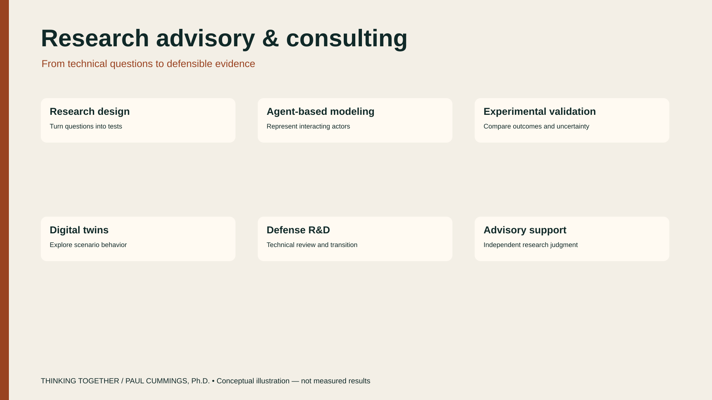
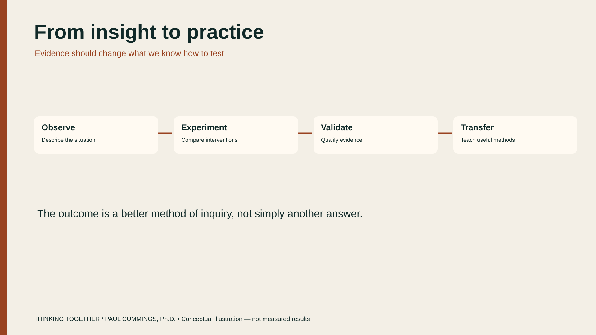

Consulting
Work together
Helping organizations use modeling and experiment to understand opaque AI systems in real decisions.
The work is practical: clarify the decision, name the assumptions, and use computation to probe the black box — so models improve judgment rather than replace it. Evidence and uncertainty stay inspectable.


Case studies


Diagrams are conceptual illustrations, not measured experimental results.